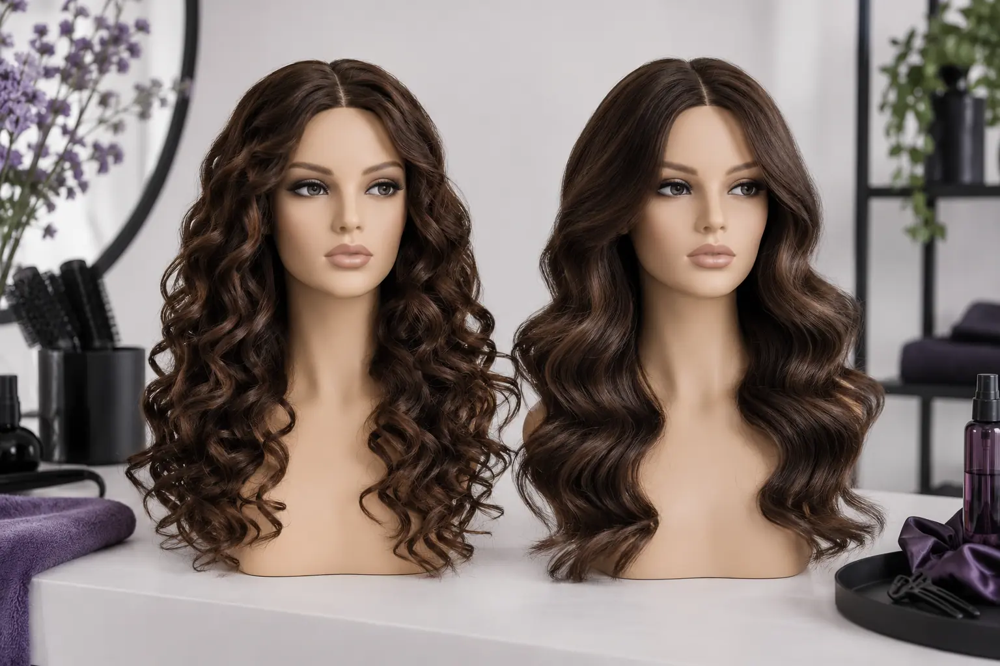

Garbanos, bangos ir tiesus sušukavimas: ką parodyti šukuosenos užduotyje?
Autorius: Madbeauty redakcija · Numatyta 2026 m. spalio 20 d. 10:00 (Lietuvos laiku)
Sužinokite, kaip nuotrauka ir keli aiškūs pasirinkimai padeda aptarti norimą sruogų formą, ilgį, tekstūrą ir sušukavimo apimtį.

Norimą sušukavimą lengviau aptarti parodžius panašaus ilgio ir tekstūros plaukų pavyzdį bei įvardijus, ką jame norite išsaugoti ar pakeisti. Garbanos, bangos ir tiesi forma nusako pageidaujamą siluetą, bet vien pavadinimas nepasako, kokie darbai įtraukti į konkretų paslaugos pasiūlymą.
Trys būdai apibūdinti norimą siluetą
Šie pavyzdžiai padeda suformuluoti norą. Tai nėra garantuoti rezultatai ar atskiri paslaugų pavadinimai.
- Laisvos bangos: „Norėčiau švelnaus judesio, o ilgį ir galiukų liniją palikti kuo artimesnius dabartiniams.“ Patikslinkite, ar svarbiau banguota forma, ar apimtis prie šaknų.
- Ryškesnės garbanos: „Norėčiau aiškiau matomų garbanų ir tokio bendro silueto.“ Parodykite, kokio dydžio sruogų formos jums patinka, ir įvardykite, ar norite kompaktiškesnio, ar laisvesnio įspūdžio.
- Tiesus sušukavimas: „Norėčiau tiesiai krentančių plaukų.“ Patikslinkite, ar siekiate glotnaus vaizdo, ar norite palikti daugiau natūralaus judesio, ir kokios galų formos tikitės.
Ką parodyti nuotraukoje
Rinkitės pavyzdį, kurio ilgis ir plaukų tekstūra panašūs į jūsų dabartinius. Jei nuotraukoje patinka tik viena detalė, pasakykite kuri: pavyzdžiui, bangos kryptis, bendras siluetas ar veidą įrėminančios sruogos. Taip lengviau atskirti norimą formą nuo viso pavyzdžio kopijavimo.
Trumpai apibūdinkite pradinę situaciją ir prioritetą: dabartinį ilgį bei tekstūrą, ką norite išsaugoti, ką keisti ir kokia proga ar kasdienis poreikis lemia pasirinkimą. Nuotrauka parodo kryptį, tačiau pati nepatvirtina, kaip toks siluetas atrodys ant kitokio ilgio ar tekstūros plaukų.
Trumpas užduoties ruošinys
- Sruogų forma: laisvos bangos, ryškesnės garbanos ar tiesi forma.
- Siluetas ir ilgis: ką noriu palikti, ką norėčiau pakeisti.
- Tekstūra ir apimtis: kokio bendro vaizdo siekiu, kas man svarbiausia.
- Pavyzdyje patinka: ši konkreti detalė; kitos detalės gali būti tik nuotaikos pavyzdys.
- Paslaugos apimtis: noriu išsiaiškinti, ar pasiūlymas apima pageidaujamą paruošimą, sušukavimą ir užbaigimą.
Atskirkite norimą rezultatą nuo paslaugos apimties
Pavyzdžio nuotraukoje gali būti ne tik sušukavimas, bet ir kitoks kirpimo ilgis, spalva ar priaugintos sruogos. Įvardykite, kurios iš šių detalių jums iš tiesų rūpi, ir patikrinkite konkretaus pasiūlymo aprašymą: ar įtrauktas tik sušukavimas, ar ir kiti darbai. Kainos, trukmės ar papildomų darbų nespėkite vien iš nuotraukos.
Jei ieškote šios paslaugos, galite peržiūrėti nacionalinį katalogo pasirinkimą „Garbanų formavimas“. Miestą reikia pasirinkti atskirai. Kategorija pati savaime nepatvirtina, kad konkrečioje vietoje yra teikėjas, laisvas laikas ar pasiūlymas.
Peržiūrėti katalogo pasirinkimą: Garbanų formavimas
Planuojamos vidinės nuorodos
Šaltiniai peržiūrai
- Level 2 Hair Professionals handbook: consultation, cutting, styling and glossary — Read Unit203/204 factors, and glossary pp93–97: outline versus layered/graduated lengths, density/texture/growth, styling versus cutting. No single definition covers all bob/carré names; no guaranteed volume or maintenance result. This is published curriculum, not actual human stylist review.